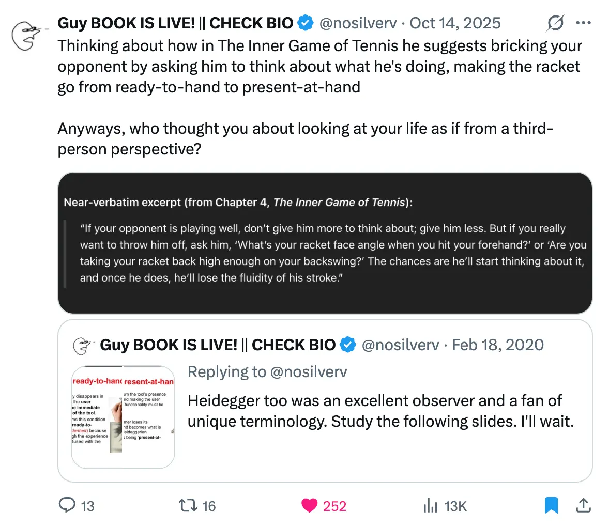
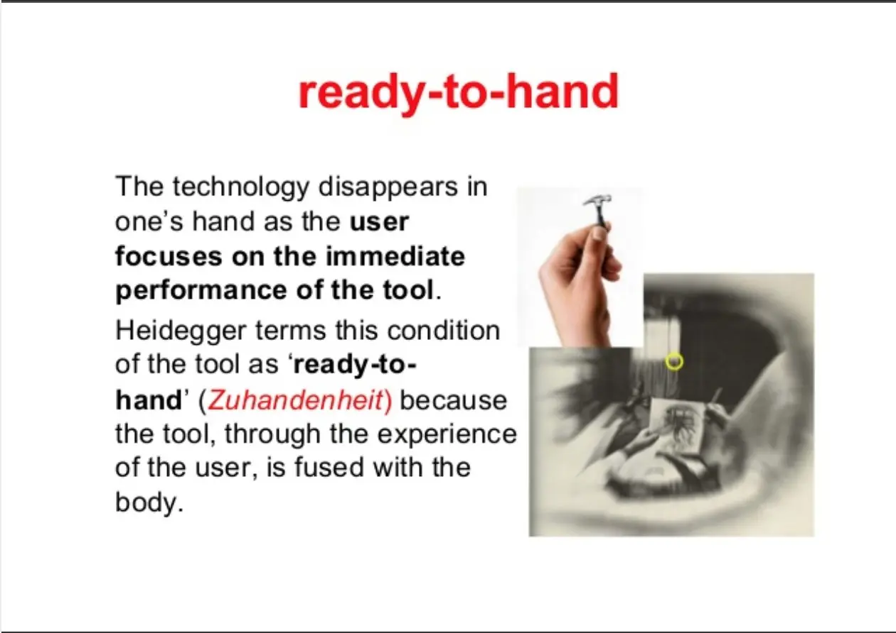
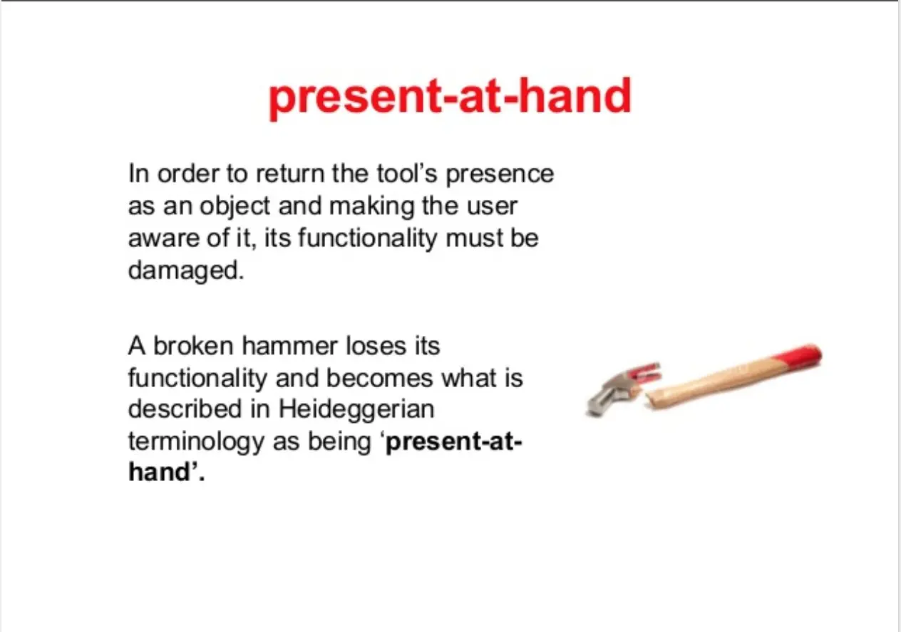
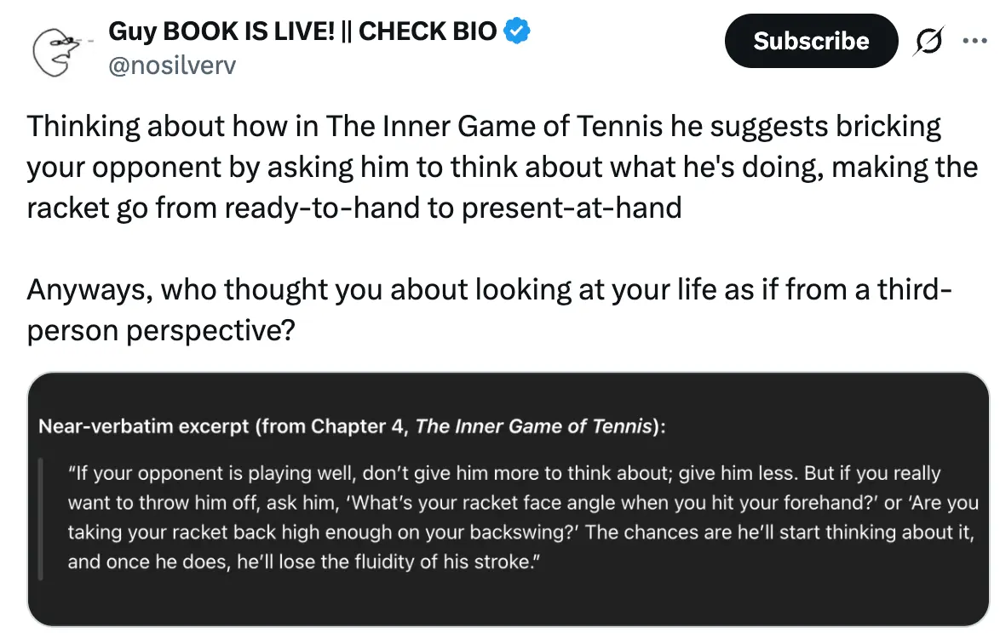

- 2026-03-15
- Writing about Chanda
- And reminded of the Heidegger thing
The core claim from Guy below, that I agree with wholeheartedly, is that “What happened is that a long time ago something went wrong with your deep models of how to be in the world.”
- 👆 this relates to left hemisphere capture, living from tanha despite it being objectively wrong (which Sasha calls “one of the most important things he knows”, and also “the most interesting finding in psychology)
- You’re second-guessing your lived experience, experiencing life through Layer 2 (imaginations) and abstractions. Experiencing a tangle of thorns (The two thorns analogy of Advaita Vedanta)
“What matters is that there is a solution: you must once again become an embodied being (not object) among other embodied beings.”
Gemini summary:
1. Ready-at-hand (Zuhandenheit)
I am arguing that this is ~the same as Chanda
This is our default mode. When you are using a hammer and you’re good at it, you don’t actually “see” the hammer as a separate object. It becomes an extension of your arm.
- The Vibe: Flow state, transparency, and involvement.
- The Logic: You aren’t thinking “this is a wooden handle with a steel head.” You are thinking about the nail and the task.
- Key Concept: The tool is ”transparent.” It only makes sense within a “web of equipment” (the hammer needs the nail, which needs the wood, which needs the house).
2. Present-at-hand (Vorhandenheit)
This happens when the “flow” is interrupted. Imagine the head of the hammer flies off, or you’ve never seen a hammer before and you’re just staring at it on a table.
- The Vibe: Detachment, observation, and analysis.
- The Logic: ==You stop using and start theorizing==. You notice its weight, its color, its material, and its physical properties.
- Key Concept: The object is now “broken out” of its context. It is just a “thing” sitting there.
Why this matters (The “Heidegger Twist”)
Before Heidegger, most philosophers (like Descartes) thought that Present-at-hand (looking at things scientifically/objectively) was the primary way we experience the world.
Heidegger argued the opposite: Ready-at-hand is our primary reality. We are “thrown” into a world of doing and using things before we ever sit down to be “objective” scientists or philosophers. Logic and science are actually "secondary" because they require us to step back and stop participating in life.
when you’re in a flow state, you by definition aren’t thinking about forcing yourself to do xyz. When you’re planning how “maybe if I can force myself to do x thing for a few months, I’ll eventually get to y”, you’re in a non-chanda, present-at-hand, fuckin dumb place. Shows that the thing isn’t the thing to do
Inner Game of Tennis (Nosilverv tweet)

Guy’s first twitter thread about this
-
Full post version is here:
-
“Heidegger too was an excellent observer and a fan of unique terminology. Study the following slides. I’ll wait.”
-

-

-
The idea is this: as you use an object, if everything goes right you forget that “you” are “using” an “object”. There is just acting happening. When something fails, maybe because the hammer breaks, you come back to yourself as yourself and to perceiving the object as an object.
-
That is, ==the explicit reflective mode is what happens when something goes wrong==. Read that again: the explicit reflective mode is what happens when something goes wrong.
Arguably, this is what left hemisphere capture is, and the failure mode of rationality. People who are in the explicit reflective mode too much, who don’t realise that it’s often suboptimal, and also reify/deify it as the correct/best mode
- Now, to tie it back to the original image: deliberate self-improvement is def. explicit and def. reflective. So what is going wrong? What is going wrong is that you aren't ready-to-hand to yourself. That is, you are - to yourself - an object, and a broken object at that.
- And thus, logically, you try to fix yourself the way you’d fix any object.
- But the whole problem is that you treat yourself as an object in the first place and explicit self-improvement only reinforces this view!
This is also Heidegger’s “technological attunement”. You’re treating yourself as a technology, something to be optimised. You’re left hemisphere captured bro, you’re out of the flow state bro, you’re in tanha bro
- What happened is that a long time ago something went wrong with your deep models of how to be in the world. You will never “prereflectively do the right things” the way that jocks does that would relatively effortlessly get you the things you wants.
- It’s unlikely that it’s genetics. It also doesn’t matter what caused it. That’s narcissistic masturbation archeology. What matters is that there is a solution: you must once again become an embodied being (not object) among other embodied beings.
Guy’s second twitter thread about this

- Thinking about how in The Inner Game of Tennis he suggests bricking your opponent by asking him to think about what he’s doing, making the racket go from ready-to-hand to present-at-hand Anyways, who thought you about looking at your life as if from a third-person perspective?
- https://x.com/nosilverv/status/1978051451474657536